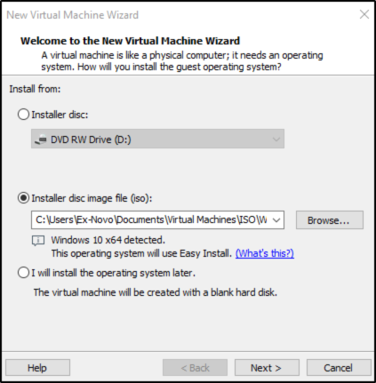
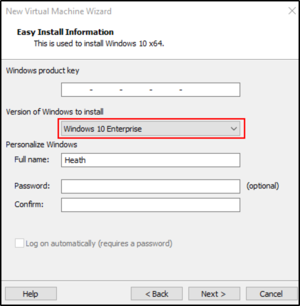
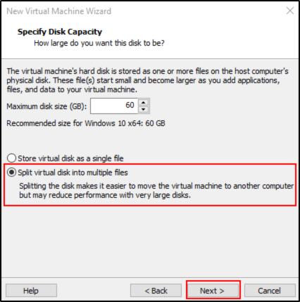
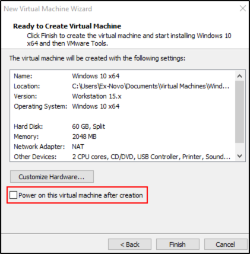

Setting Up the User Machines
DO THIS PROCESS TWICE WITH THOSE CREDENTIALS TO SET:
1) User:Frank Castle, Hostname: THEPUNISHER, Password:Password1
2) USER:Peter Parker, Hostname: SPIDERMAN, Password:Password2
WE WILL CREATE THE PETER PARKER, CREATE THE FRANK CASTLE TOO
On New VM Creation:





On VM Settings:


First VM Boot:
Into First Login into Windows VM:


AT THE END INSTALLATION, YOU CAN REBOOT (IT SHOULD BE ALREADY FULL SCREEN CORRECTLY)


Addition Steps to do:


(Again, CherryTree doesn't let me upload more images)
Here, go to “Rename your PC” and rename your PC to “SPIDERMAN”